Книги
Фотографии из портфолио полиграфического комплекса «КЕМ».

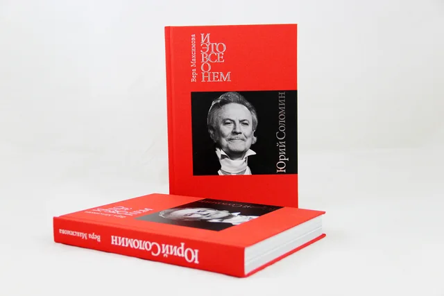
Юрий Соломин. И это всё о нём
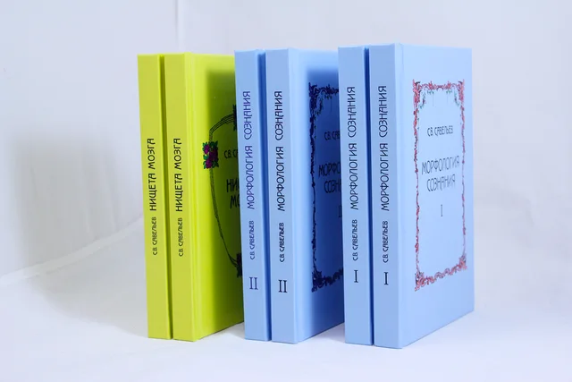
Серия книг в цветных переплётах
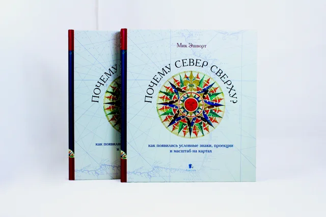
Почему Север сверху?
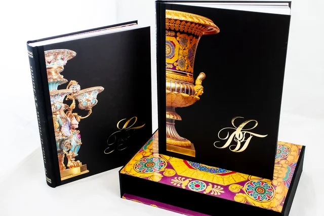
Художественные издания с репродукциями на обложках
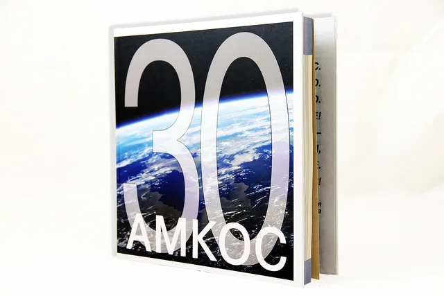
30 лет Ассоциации музеев космонавтики
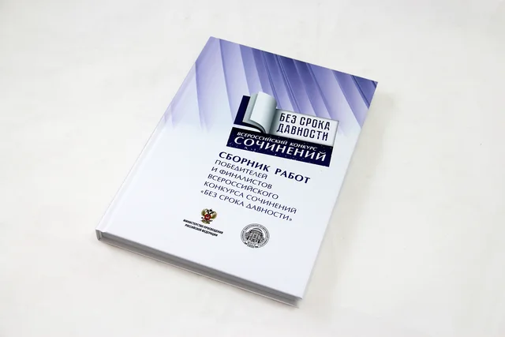
Без срока давности. Сборник работ
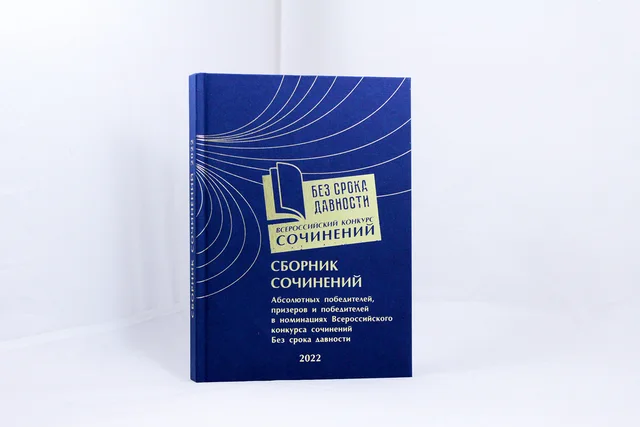
Без срока давности. Сборник сочинений
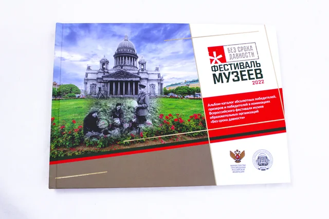
Фестиваль музеев
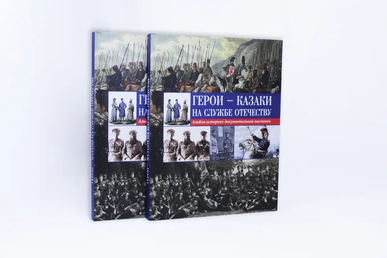
Герои-казаки на службе Отечеству
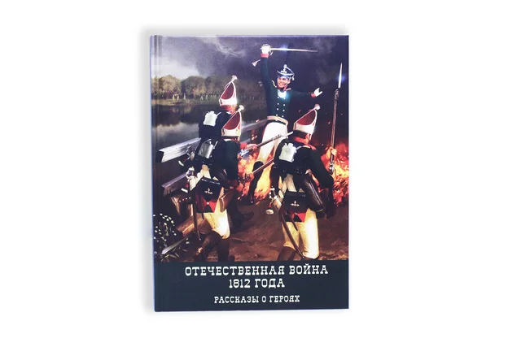
Отечественная война 1812 года
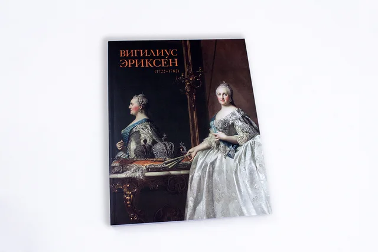
Вигилиус Эриксен
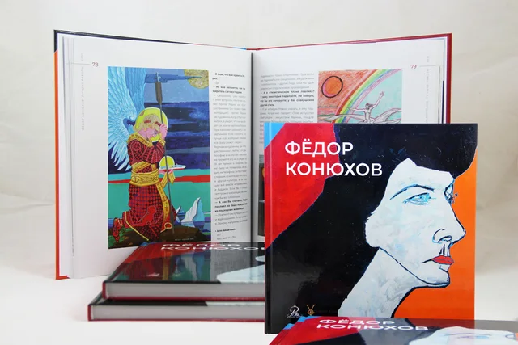
Фёдор Конюхов
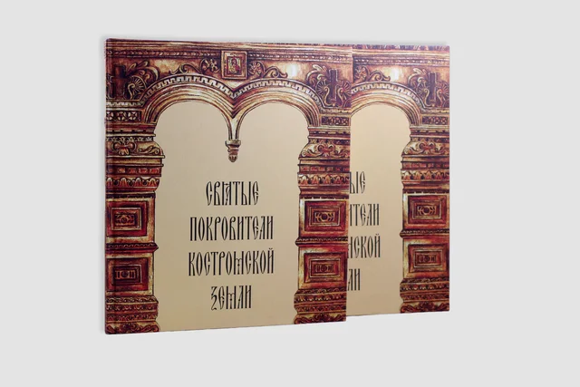
Святые покровители Костромской земли
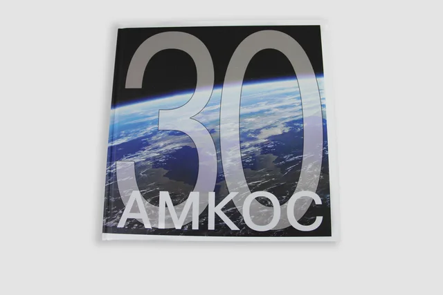
30 лет АМКОС
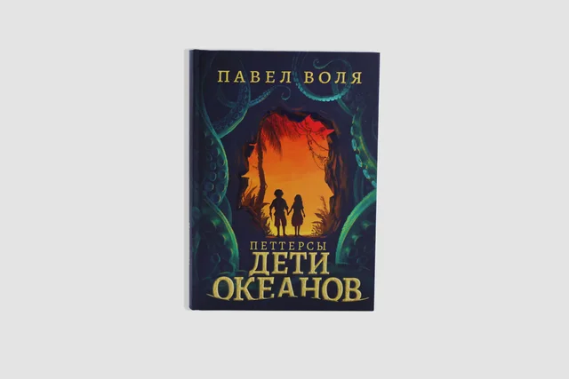
Павел Воля. Дети океанов
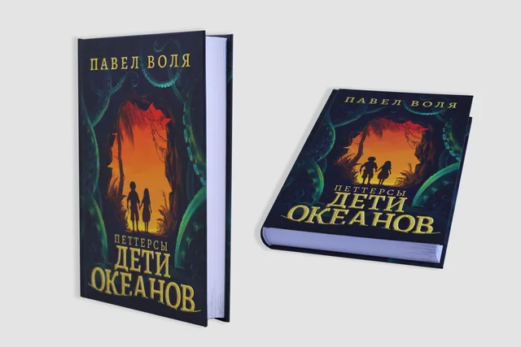
Дети океанов. Два экземпляра
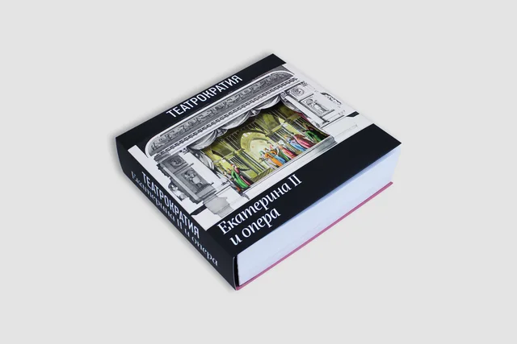
Екатерина II и опера
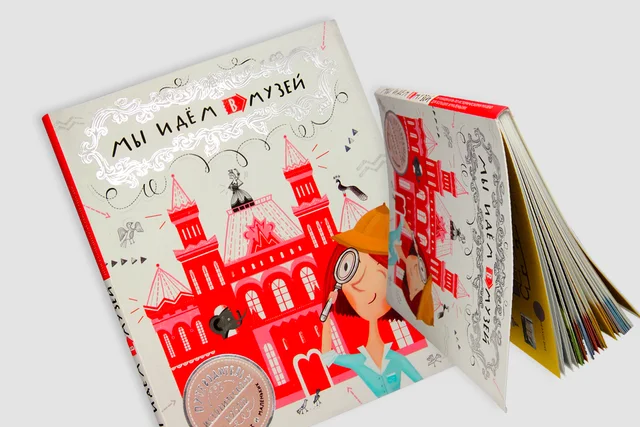
Мы идём в музей